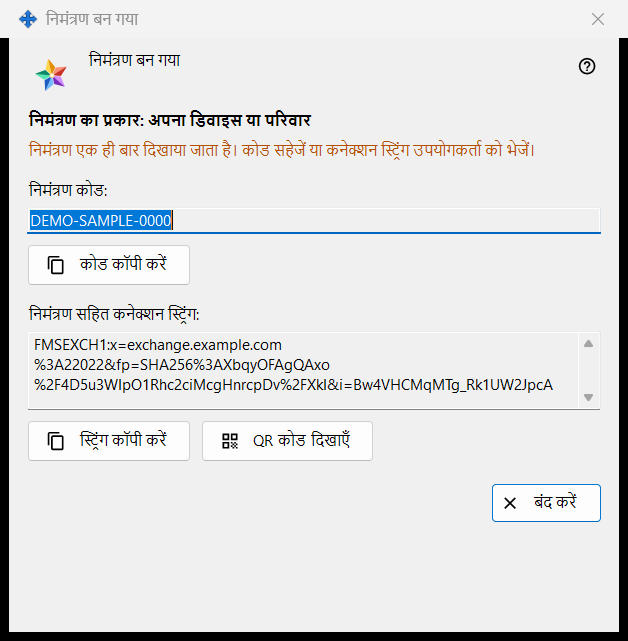
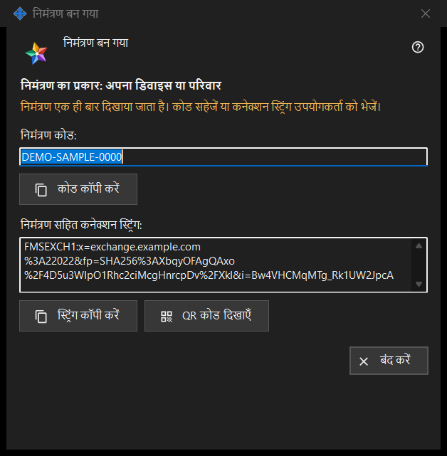

निमंत्रण बन गया
यह किस लिए है
यह विंडो निमंत्रण बनाएँ विंडो में बनाएँ दबाने के ठीक बाद नया निमंत्रण एक ही बार दिखाती है। इसमें एक बार चलने वाला कोड होता है और, जब एक्सचेंज सर्वर प्रोग्राम उसे बना पाए, ऐसी कनेक्शन स्ट्रिंग भी जिसमें कोड पहले से शामिल है।


इस क्रम में
- वह पंक्ति देखें जो निमंत्रण का प्रकार: से शुरू होती है और चुना गया प्रकार जाँचें।
- कोड कॉपी करें दबाएँ, या निमंत्रण वाली स्ट्रिंग के लिए स्ट्रिंग कॉपी करें, या QR कोड दिखाएँ।
- इसे किसी भरोसेमंद माध्यम से उस व्यक्ति को दें।
- बंद करें दबाएँ। वही कोड दोबारा नहीं दिखाया जाता।
तत्व
प्रकार और चेतावनी
मोटे अक्षरों की पंक्ति चुना गया प्रकार बताती है, जैसे निमंत्रण का प्रकार: अपना डिवाइस या परिवार। विंडो बंद होने पर कोड और स्ट्रिंग उसमें से मिट जाते हैं। उनमें से कोई खो जाए तो सूची में निमंत्रण वापस लें और नया बनाएँ। चेतावनी के रंग की पंक्ति कहती है: निमंत्रण एक ही बार दिखाया जाता है। कोड सहेजें या कनेक्शन स्ट्रिंग उपयोगकर्ता को भेजें।
निमंत्रण कोड
निमंत्रण कोड: केवल पढ़ने वाला बॉक्स है जिसमें कोड दिखता है। बटन कोड कॉपी करें उसे गुप्त जानकारी की तरह कॉपी करता है, जो Windows क्लिपबोर्ड इतिहास (Win+V) और क्लाउड क्लिपबोर्ड में नहीं जाती; नीचे की पंक्ति इनमें से एक दिखाती है: निमंत्रण कोड क्लिपबोर्ड पर कॉपी हो गया। या: कोड क्लिपबोर्ड पर कॉपी नहीं किया जा सका।
निमंत्रण सहित कनेक्शन स्ट्रिंग
निमंत्रण सहित कनेक्शन स्ट्रिंग: तभी दिखती है जब स्ट्रिंग बन सकी हो। वह सर्वर का नाम बताती है और कोड साथ रखती है, इसलिए उसे कोड की तरह सँभालें: बटन स्ट्रिंग कॉपी करें उसे भी गुप्त जानकारी की तरह कॉपी करता है। उसमें आपके खाते का पासवर्ड नहीं होता।
QR कोड
बटन QR कोड दिखाएँ निमंत्रण वाली स्ट्रिंग की तस्वीर खोलता है। इसे देखने वाला कोई भी निमंत्रण का उपयोग कर सकता है, इसलिए इसे केवल उसी को दिखाएँ जिसके लिए यह है। तस्वीर न बन सके तो पंक्ति कहती है: QR कोड अभी उपलब्ध नहीं है।
दूसरा व्यक्ति क्या करता है
एक्सचेंज खाता विंडो (साइन इन..) में व्यक्ति बटन चिपकाएँ से स्ट्रिंग चिपकाता है या सहेजी हुई फ़ाइल खोलता है। निमंत्रण वाली स्ट्रिंग विंडो को पंजीकरण पर ले जाती है: वह लॉगिन चुनता है, पासवर्ड दो बार लिखता है और खाता बनाएँ दबाता है। गलत या पहले इस्तेमाल हो चुका निमंत्रण, या लिया जा चुका लॉगिन, संदेश के साथ अस्वीकार कर दिया जाता है।
बंद करें
बटन बंद करें विंडो को समाप्त करता है और उसमें से कोड और स्ट्रिंग मिटा देता है। यहाँ और कुछ सहेजा नहीं जाता।
प्रबंधक सेटिंग · SFTP साझाकरण सेटिंग · एक्सचेंज सर्वर सेटिंग